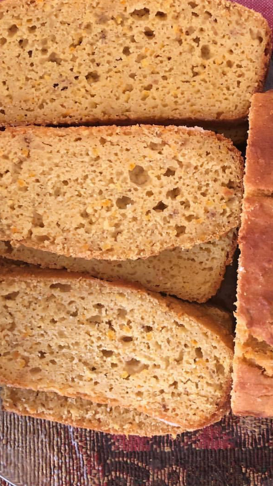
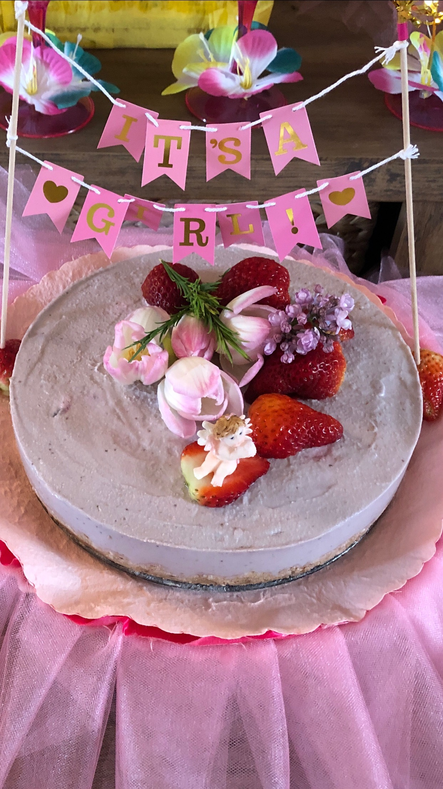

My youngest sister is a very good baker. She inspired me to try on baking as well.I find baking very difficult but I keep trying. I would love to share some of my baking experiences. Baking cakes are the most difficult experience for me. I try to follow the exact recepies but i have been succesful few times only. I would like to share the most easiest receipes i have tried.

This is one of the most easiest orange bread i have bake ever.Anybody can be successful in baking this orange bread in first try. These are also very delicous and goes well with afternoon tea.
El Mundo Eats
Mix three eggs, one medium size whole orange with skin(chop them) and blend them in the blender.Add 70 ml of vegetable oil, coconut oil or butter. Add some sugar as per your taste. Pour the mixture in a bowl and add 250 gm or 2 cups of self rising flour slowly.Once it forms like batter, transfer it into bread making pan and put it in the preheated 350F oven for 40 minutes. wait untill it cools down, once it cools down, it is ready to serve.

This is another easy,dairyfree,healthy cheescake. It is made from nuts and strawberries or blueberries. The best thing about this cake is that it does not need to be baked.Once i tried making it for one of my friend baby shower and it was pretty hit. Nobody could beleive that it was dairy free and made from all nuts and fruits.
I made this cake using and modifying receipe from The Cooking Foodie
Chop 1 and half cup of dried Alomnds, walnuts or Pecans with some pitted dates in the food processor.Add dates depending on your preference of sweetness. Mix it untill it looks like crust. Transfer the crushed nuts in the springform cake pan and press it hard with your hands or with cup.Soak two cups of cashews for couple of hours or boil them if needed quickly. Drain it and blend it in the food procesor adding some pitted dates(Dates are optional if you would like to add more sweetness).Add some blueberries or strawberries dependning on the taste or color you prefer. Than add this mixture of cashews and strawberries or blueberries mixture on top of the crushed nuts.Than freeze it overnight.
Since this are not baked, it has to be inside freeze for at least 4,5 hours.Once they are out from the freeze than Vegan cheese cake is ready to serve.
References
- https://www.pexels.com/photo/kitchen-cookware-piled-up-on-brown-wooden-rack-187083/
- https://www.pexels.com/photo/flat-lay-photography-of-variety-of-vegetables-1435904/
- https://www.pexels.com/photo/chopping-boards-near-oven-under-hood-2062426/
- https://www.pexels.com/photo/delicious-food-on-the-table-2466644/
- Louise & Jeremy Hendon”The Essential Keto Cookbook page no:115” flourless bread receipe.
- https://www.thehealthymaven.com/healthy-peanut-butter-chocolate-mug-cake/